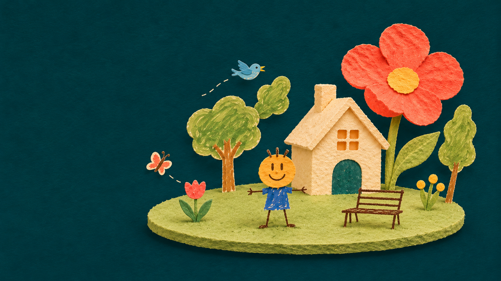

A mixed reality drawing game
What I Drew
Grew
A little drawing. A living garden. Paint a friend, bring it to life, and build a world that looks like you made it.
See how it grows
Your drawings become the world
Draw. Bring to life.
Make room for more.
Start with a friend.
Pick up the brush with your hands and paint on the canvas. Keep the wobbly lines and unexpected colours. They belong here.
Meet what you made.
Watch your friend step into the garden. Paint a flower, visit it together, and begin building a home.
Keep the story going.
Add trees, birds, butterflies and a painted bench. Arrange your creations, care for the garden, and return to change it again.
Made by hand. Made by you.
A garden with your handwriting.
Paint the surfaces of your home and bench, leave open spaces in your drawings, and choose where your creations belong. A different arrangement gives your little friend different places to visit.
Use the three garden shortcuts to find your way: Create adds something new, Visit explores what is there, and Arrange changes your world.
- Meta Quest 3 & Quest 3S
- Hand tracking
- Single player
- Offline gameplay
Keep it close.
Begin in Comfort world with your canvas and garden nearby. If you want your garden to use your room, choose Space world and allow the headset to use its spatial data. Comfort world stays available without room access.
No extra account is needed. Your drawings and progress save on your headset.
Read the play guide and help →